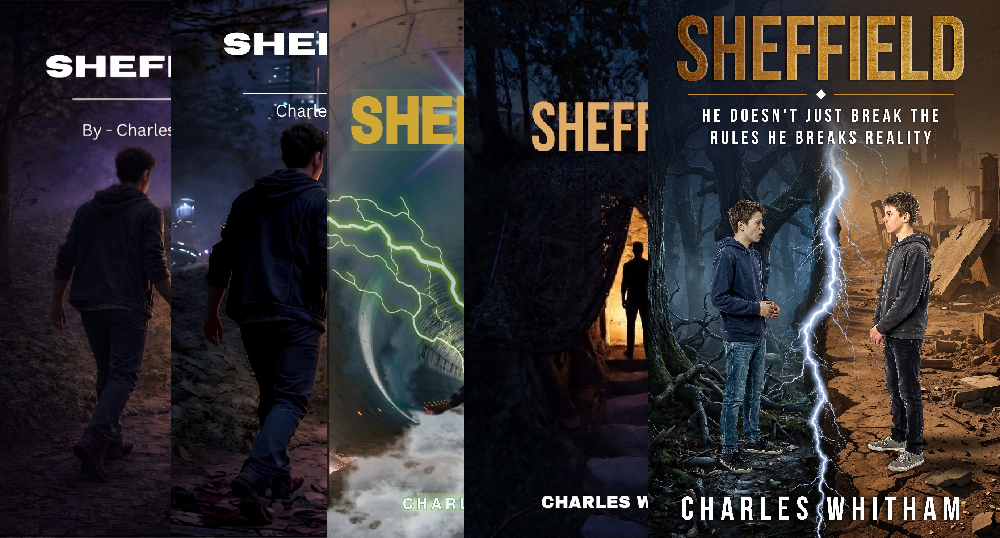

Right now there is a website to maintain, a third novel to finish, and a book signing next month. But before all of that, there was just the idea to write a story.

After some encouragement from a student in one of my classes, I decided to start writing a book. But what would I write about? I had no formal training. The only thing I had written up to that point were songs, and a lot of them. I started writing songs when I was thirteen years old. I had come to understand that a song is really just a two to three minute story, so I figured I could build the bones of a book. Whether I could flesh one out was another question entirely.
I grew up thirty minutes north of Kansas City in Excelsior Springs, on a farm owned by my grandmother. Behind the barn were the woods. I spent most of my childhood in them and knew them well. So I started there: a boy walking in the woods. I was a Star Wars kid, deep into science fiction, and I kept turning the same question over. How do I make this a sci-fi story?
The answer was already there. In the woods behind my grandmother's farm stood the remnants of an old house that the forest had slowly swallowed up. No road led to it. There was just the basement and a couple of walls still standing, trees growing up through the middle of what had once been rooms. So I put a portal there.
Where the Name Came From
After a while I decided I needed to take the story more seriously. That meant giving the boy a proper name. I had been calling him Carlos, Charles in Spanish, which was a little too on the nose. I needed something that felt like it belonged to the character I was building.
I have been a Kansas City Chiefs fan since I was a kid. Around the time I was working through this, the Chiefs drafted a linebacker out of Troy University named Cameron Sheffield. I thought Sheffield was a genuinely great name. It had weight to it. It felt right for this character, so he became Sheffield. That piece of Chiefs fandom has been sitting on the front page of my first novel as an easter egg ever since, and this is the first time I have said so publicly.
The Hall Closet Problem
I kept writing, drawing from things I knew, and eventually I finished the book and published it in January. Then I wrote Tatwitt. Writing Sheffield had taught me a great deal about how novels actually work, so Tatwitt came together more smoothly, and it had the additional advantage of being built on an existing story structure. Once Tatwitt was out, I looked back at Sheffield and felt that uncomfortable feeling you get when you open a hall closet you have been ignoring. It needed to be dealt with.
My first instinct was to start with the cover. I changed it once, then again, then again. I went through versions I thought were fine until I looked at them a week later and disagreed with myself. When the broader conversation about AI-generated artwork started picking up, I was already deep into the revision anyway, so I hired an artist and had a proper cover made. What I had come to understand by then was that the cover was never really the problem. The writing itself needed to catch up. The first edition was a decent effort from someone who had spent his whole life writing two to three minute stories and was attempting something much longer for the first time. That version of the book had earned its place. But it was not the book Sheffield could be.

So I went back and did the work. I added material, smoothed out the rough sections, and made it a more complete story. Sheffield and Tatwitt are now both books I can stand behind, and they form the foundation for The Emotion Engine, which I have just finished chapter thirteen of.
Sheffield took a long road to get where it is. I hope this was a worthwhile look at how it started and what it took to get it right. Thanks for following along.
—Charles